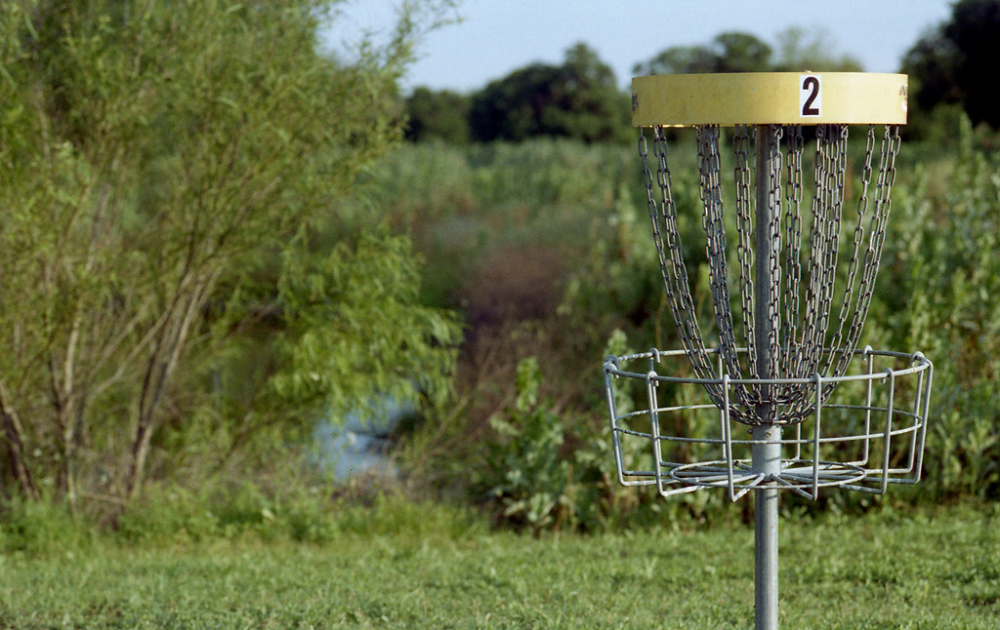
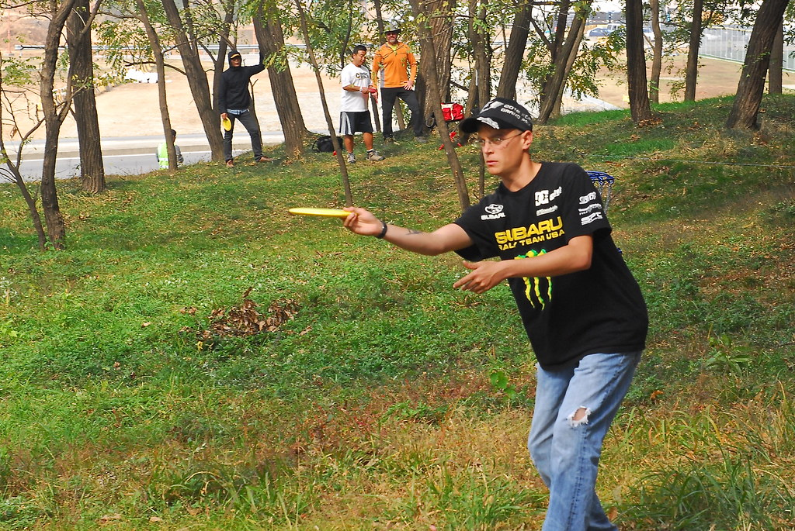

How to Folf
- The first thing that you need to Folf is a folfing disc. Discs are found at most sports stores.
- You go to a folf course of your choosing. If you don't know of any nearby folf courses there are many sites that detail where folf courses are.
I personally love the Blue Mountain Folf course in Missoula, Montana.
- When you arrive at the Folf course, if there is a map of the course I reccommend viewing the map to see where the first hole is.
With that being said find the first hole which should be marked with a number.

Example hole in a course
- Once you have reached the first hole, you and the other members will take turns throwing a disc.The best way to throw the disc is by keeping the disc flat and using your wrist to aim at the hole.

Image of man throwing a frisbee disc
- After each player has gone, the player that is farthest from the hole will go first and then the next farthest and so on.
- You will count the number of throws it took for you to get in the hole. The person with the lowest number of throws is the winner
- After the first hole, you will continue to the next hole and start the process over again until you reach the end of the folf course.